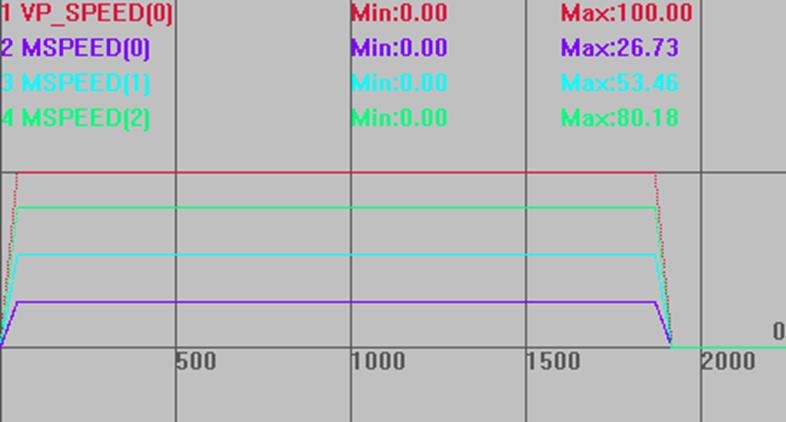
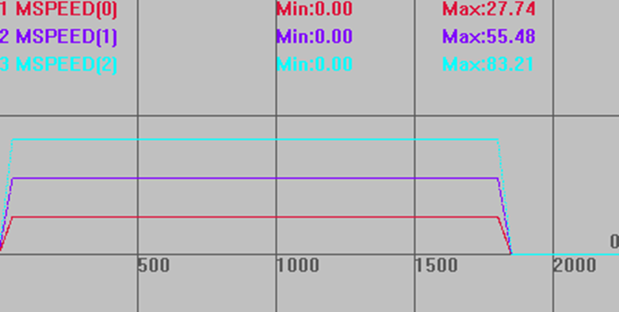
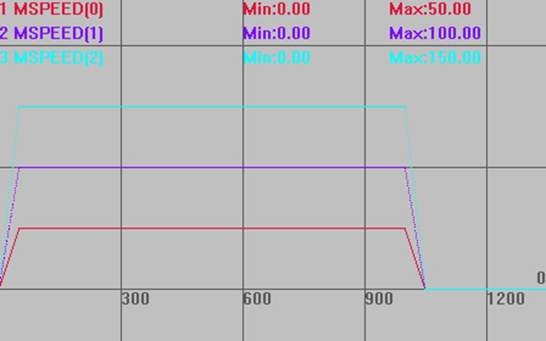

|
类型 |
轴参数 |
|
描述 |
插补时轴是否参与速度计算，缺省参与计算（1）。
此参数只对直线的任意轴和螺旋的第三个轴起作用。 运动后请及时还原，否则会导致后续运动不正确。 插补速度计算为0的从轴不参与主轴的矢量计算。 部分轴不参与速度计算时，先按参与计算的轴的插补计算出参与轴的分速度和运动总时间，再把不参与计算的轴的运动距离依次除以总时间，得到不参与计算的各轴的相应速度。见例二。 不能把插补的实际运动的所有轴都设置0，会导致实际速度无穷大。 |
|
语法 |
INTERP_FACTOR = 0/1 0-不参与计算，1-参与计算 |
|
适用控制器 |
通用 |
|
例子 |
例一：全部参与速度计算 BASE(0,1,2) '选择轴0为主轴 DPOS=0,0,0 ATYPE=1,1,1 UNITS=100,100,100 '脉冲当量100 SPEED=100,100,100 '主轴速度100units/s ACCEL=1000,1000,1000 DECEL=1000,1000,1000 INTERP_FACTOR=1,1,1 '3轴都参与速度计算 TRIGGER '自动触发示波器 MOVE(100,200,300) '各轴分运动距离
此时根据合成运动速度100可以计算出各轴分速度，如下图。 VP_SPEED(0)垂直刻度100 MSPEED(0)垂直刻度100 MSPEED(1)垂直刻度100 MSPEED(2)垂直刻度100 
例二：部分轴不参与速度计算 INTERP_FACTOR=0,1,1 '轴0不参与速度计算
此时先计算出仅有2、3轴插补时的分速度、运动总时间，然后再以轴0的运动距离除以总时间，得到轴0的速度，如下图。 垂直刻度同上 
例三：只有一个轴参与计算 INVERT_FACTOR=0,1,0 '只有轴1进行运动计算
此时轴1的速度就是主轴速度100，然后计算出运动总时间。其他轴依次用运动距离除以总时间，得到各轴速度，如下图。 垂直刻度同上  |
|
相关指令 |